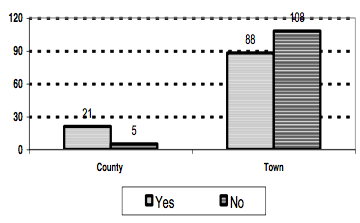
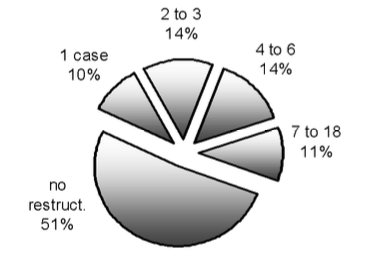
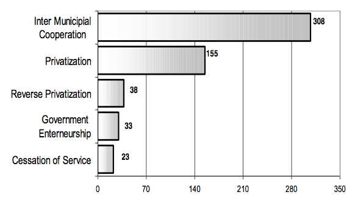
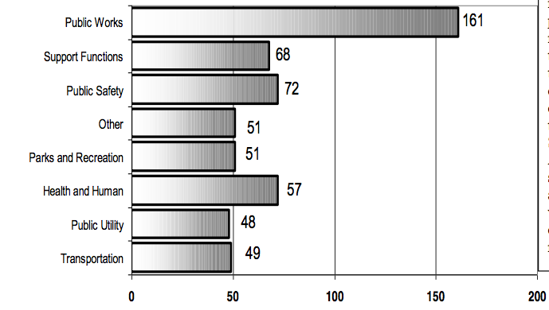
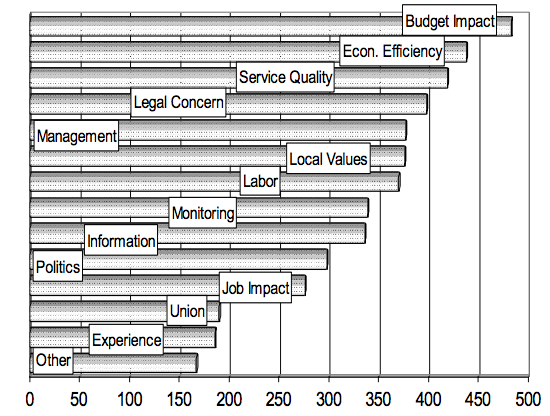
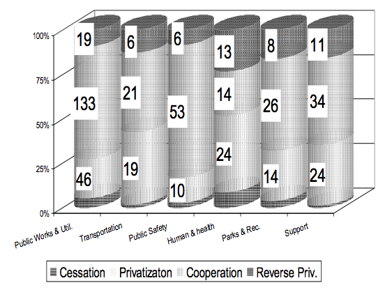
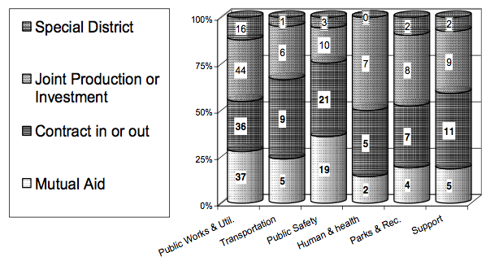
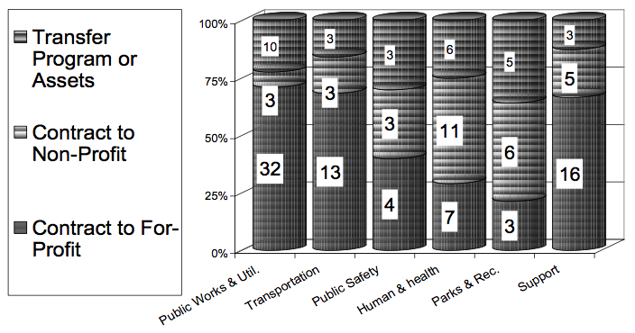

Local Government Restructuring in New York State:
Summary of Survey Results
by Mildred Warner and Robert Hebdon
Surveys on restructuring of service delivery were distributed to the chief elected officials in all town (932) and upstate county (57) governments in New York State from November 1996 to March 1997. A total of 26 counties and 196 towns responded for an overall response rate of 22%. This research, undertaken in collaboration with the County Legislators and Supervisors Association (now the New York State Association of Counties) in 1996 and 1997, found that half of responding governments had implemented some form of restructuring since 1990.
Restructuring in New York State primarily involves public sector innovation rather than privatization. Intermunicipal cooperation was the predominant form of restructuring, while privatization was the second most common form of restructuring. Significant levels of reverse privatization and governmental entrepreneurship were also found. Incidence of restructuring was highest among counties, and in the following service areas: public works, public safety, and general governmental support functions.
Impact on local budget and economic efficiency were the most important factors in the decision to restructure services. Concerns with service quality and community values were also important. Labor and management concerns were also significant but unionization was not considered a major factor. Legal and political concerns, availability of information and experience with past restructuring were also important. Local governments in New York State critically assess their restructuring options to enhance efficiency while maintaining service quality and reflecting community values. Economies of scale and competition are keys to efficiency, not privatization per se. Thus, local governments employ a variety of restructuring options. They achieve economies of scale by cooperating with other governments, and they promote competition by encouraging public sector units to compete with private sector providers. The charts and text below summarize some of the key findings of the survey.
Restructuring Activity by Responding Governments

County governments are more likely to restructure than towns. Twenty-six of 57 counties responded. Of these, 21 had restructured. 196 of 932 towns responded. Of these, 88 had restructured. Many towns felt they were too small or too rural to experiment with alternative forms of service delivery.

Governments that restructure in one area are more likely to consider restructuring in other areas as well. Of the 49 percent of responding governments that had restructured, most described several cases of restructuring.
Types of Restructuring

Intermunicipal cooperation is the most common form of restructuring among town and county governments in New York State (54% of the total). Privatization is the next most common form (28%) but reverse privatization (7%) and governmental entrepreneurship (6%) provide a counterbalance. Competition is key to improved efficiency, and local governments in New York State use reverse privatization to create competition between public and private service providers. Governmental entrepreneurship is used to achieve economies of scale within the public sector by offering services to private sector customers. Cessation of service (8%) is rarely chosen as a restructuring method.
Restructuring by Service Area

Restructuring was most common in public works. This is not surprising since there is a strong tradition of highway department collaboration throughout New York State. Administrative support and public safety were the next most common areas to be restructured.
Restructuring Factors

Local officials in New York State take a pragmatic approach to restructuring. They are not driven primarily by political or unionization concerns. Budgetary impact, economic efficiency and service quality were the most important factors in government decisions to restructure. Technical issues around service delivery (management, labor, legal concerns and information and monitoring) were next in importance. Community values about the structure of service delivery were also important. Politics and unionization were not important factors in the decision to restructure. Ranking of these factors did not vary significantly between those governments that restructured and those that did not.
Incidence of Restructuring by Type and Service

Intermunicipal cooperation was the most common form of restructuring in all service areas except health and human services. Privatization ranked next in importance. In health and human services privatization was the most common form of restructuring. Reverse privatization occurred roughly 25 % of the time in health and human services, parks and recreation and administrative support. In public works and public safety, reverse privatization was rare.
Cooperation Type by Service

Intermunicipal cooperation allows governments to achieve economies of scale and still keep services in the public sector. Historically mutual aid agreements have been popular in New York State and continue to be used widely in public works and public safety. Contracting in or out with other governments is the most common form of intermunicipal cooperation. Although few special districts have been formed, joint production of services is becoming more widespread.
Privatization Type by Service

Governments can transfer authority for service provision completely to a private sector player or maintain some authority over service provision by contracting out. Town and county governments in New York State prefer contracting out to program transfer as it allows them to maintain some authority over service provision. Contracting out to the private sector was most common in public works, transportation and administrative support services. Contracting out to the non-profit sector was most common in health and human services and parks and recreation.
Mildred Warner is Professor in the Department of City and Regional Planning at Cornell University.
Robert Hebdon is Assistant Professor in the School of Industrial and Labor Relations at Cornell University.
This research was supported by a grant from the USDA Hatch Research Program through the Cornell University Agricultural Experiment Station and by Cornell Cooperative Extension. Special thanks to Amir Hefetz for graphics.